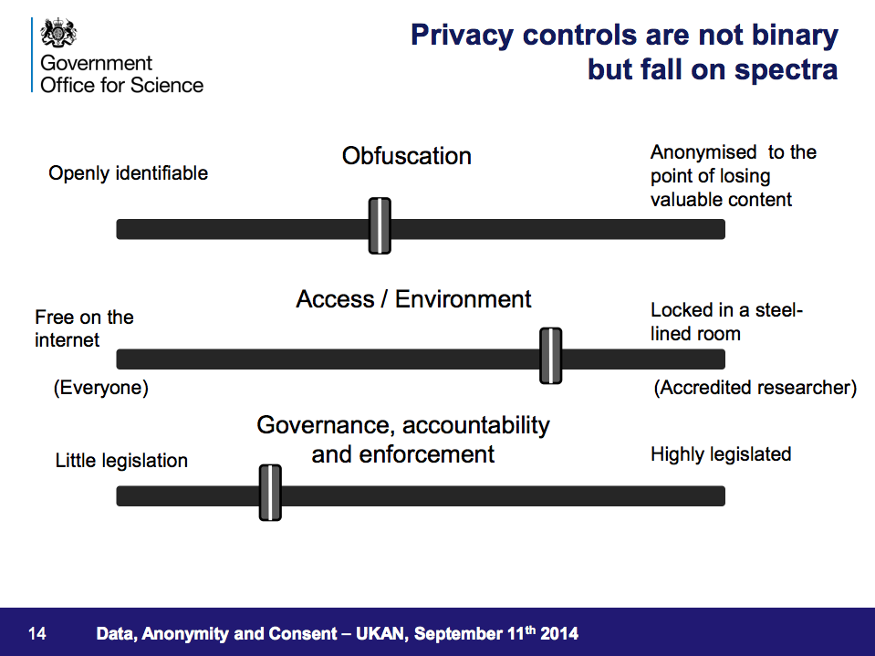

Last Thursday, the UK Anonymisation Network (UKAN) hosted well over a hundred participants at the Wellcome Collection. The title of the conference was Anonymisation: Techniques, Risks and Benefits and it featured a selected mix of practical case studies, legal and political discussions and high-level thoughts.
Below is a summary of the key themes from the day. Central to most discussions was the notion of a trade-off between the usefulness and risk of sharing data. For individuals it is enough to follow leading practice, as a civil society, however, we have to think further ahead. It went so far as to question the concept of personal data... Yet we don’t say: fire safety is impossible because there are fires. Anonymisation is about managing risk and we can be optimistic.
Polyamorous paradisia or the gloom merchants of the inferno?
The Information Commission Officer Christopher Graham opened the day with a colourful picture of a glorified utopia and an infernal dystopia. Data can be used for good and evil. However, there must be a sensible position between the two extremes.
Anonymisation "can be done", but we must be careful because it can also be done badly.
Who is liable if data causes harm?
The legal panel provided a fascinating discussion on privacy and how, as a society, we may treat the increasing amounts of personal data. Lillian Edwards (Strathclyde University), Iain Bourne (ICO), Mireille Hildebrandt (Radboud University Nijmegen), and Paul Jackson (CESSDA) explored current and philosophical topics.
For example, the EU recently published the Opinion 05/2014 on Anonymisation Techniques. Professor Mireille Hildebrandt pointed out how most legal documents rest on the definition of personal data. The core problem in the future may not be personal data itself, but what can be inferred. You may know my shopping habits, but why should you know whether I'm pregnant or not.
Future discussion on anonymisation therefore ought to move on from singling out an individual to a data lifecycle management approach.
Harm, perhaps in the form of exclusions, profiling or targeting, may also come from the allowed reuse of personal data. We are not hard-wired for statistics and algorithms. They make us manipulable.
A promising solution is to give some power back to individuals, for example, with profile transparency: a right to know what knowledge about you is used and a right to object.
Who is liable if data causes harm? The answer was somehow left open. Currently, an individual has little to fear if harm was not "reasonable foreseeable". Unlike physical products, data export is much harder to control. Sharing data across borders is therefore a topic for another conference.
Anonymisation Decision-Making Framework
After Professor Sir Nigel Shadbolt's keynote, we heard more from UKAN and its current framework.
It’s impossible to say 'data is anonymised' by looking at the data. Anonymisation is about data situations.
Kieron O’Hara and Mark Elliot emphasised the importance of context. The technical aspects are only a minority part of the whole process. In general, you want to
- understand how a privacy breach might occur,
- understand the possible consequences of a breach, and
- reduce the risk of a breach occurring to a negligible level.
They also presented a ten step process for the Anonymisation Decision-Making Framework.
Two practical case studies
Mary Gregory from the Department of Energy & Climate Change (DECC) presented the first case study on the National Energy Efficiency Data Framework. In 2014 they released two anonymised datasets:
- A public use file with 50,000 records (less than 1% of the total file)
- An end user licence file with 4 million records with several access restrictions
The statisticians at DECC went through several consultations and intruder tests. The results gave them confidence. Even a £800 prize was not claimed by a group of motivated post-graduate students in computer science.
Max Payne explained the second case study the Stat-Xplore from the Department for Work and Pensions (DWP). DWP have access to 20 million individuals claiming benefit, so are one of the data-richest departments.
The original tabulation tool was limited and users wanted more detailed geography, fewer restrictions, and the ability to reuse the data more easily. Stat-Xplore addresses this feedback and also includes better metadata: more information about the data.
The tool is based on microdata and uses output perturbation that is applied dynamically. Every cell is also protected against repeat requests. So far there is no evidence of any kind of disclosure.
Both case studies highlighted the negotiations between useful data and the risk of revealing personal information.
Society doesn't work in the absence of data sharing
The third keynote by Professor Sir Mark Walport, Government Chief Scientific Adviser, was again inspiring on a broad level. He showed us that society has always depended on people sharing information. For example, democracy depends on identifying us, so that we can vote. Equally, the world of business uses our data for better and worst, but the conclusion is not black and white. He presented three slides to show the different spectra:
- obfuscation / anonymisation
- access / environment
- governance, accountability and enforcement

A trend towards query-based access
The last panel of the day focussed on policy. Christine O'Keefe (CSIRO), Keith Spicer (ONS), Tanvi Desai (ADS) and our own Jeni Tennison (ODI) discussed data access mechanisms and policy implications. There is a spectrum of access methods and a more granular approach of who needs access and what they want to access will put in better safeguards for data sharing.
Statistical disclosure control in the future may involve specialist hackers and for data that is not open, records and accountability of who has access, are crucial to engender trust.
Anonymisation remains an important tool for anyone publishing data. While we should have sophisticated discussions on the future of personal data in our society, the crucial step for an individual is to consider data in its context.
Where to learn more
Have a look at: